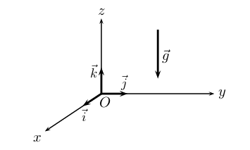
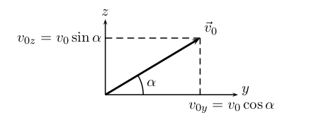
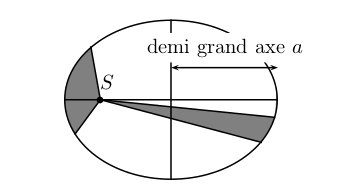
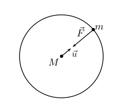
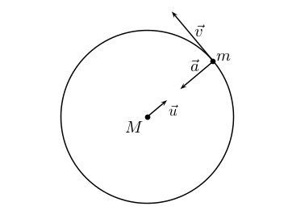

Le centre de masse G d'un système non ponctuel est le barycentre des masses du système.
Pour un système homogène de géométrie simple, le centre de masse est le centre du système.
Exemples :
Pour décrire le mouvement d'un système, il faut d'abord préciser par rapport à quel référentiel (c'est à dire par rapport à quel corps de référence), on veut décrire ce mouvement.
Exemple classique : assis dans un train : suis-je en mouvement ou immobile ?
Réponse : je suis immobile dans le référentiel du train, mais en mouvement dans le référentiel
terrestre.
Il existe une classe de référentiels d'importance toute particulière, appelés référentiels galiléens, qui sont tous en mouvement rectiligne uniforme les uns par rapports aux autres.
Dans un référentiel galiléen, le principe d'inertie s’applique : càd qu'un système soumis à des forces qui se compensent est soit immobile, soit en mouvement rectiligne uniforme.
Rappel de 1ère : si la somme des forces qui agissent sur un système est nulle, son vecteur vitesse ne subit aucune variation (direction, sens, valeur constants donc MRU).
En première approximation, si le référentiel d'étude peut être considéré comme étant en mouvement rectiligne uniforme (dans un "vrai" référentiel galiléen), alors il est considéré comme galiléen.
Exemples à connaître :
On a vu en classe de 1ère que la variation du vecteur vitesse entre des instants voisins est colinéaire au vecteur somme des forces extérieures appliquées au système.
Par ailleurs, plus la masse est grande, plus l'effet des forces est faible.
Or on sait maintenant que la variation du vecteur vitesse entre des instants voisins (infiniment proches même) est le vecteur accélération.
Tout est donc en place pour découvrir logiquement la 2ème loi de Newton qui stipule que dans un référentiel galiléen, le vecteur accélération du centre de masse est colinéaire à la somme des forces extérieures appliquées au système et inversement proportionnel à la masse : $$ \overrightarrow{a_G} = \dfrac{1}{m}\sum \overrightarrow{F_{ext}} $$ que l'on écrit plus souvent sous la forme suivante : $$ \sum \overrightarrow{F_{ext}} = m\overrightarrow{a_G}$$
On en déduit en particulier quelques résultats particuliers importants :
L’étude est réalisée dans le référentiel terrestre, considéré galiléen.
Le système est un solide de masse \( m \) et de centre d’inertie \( G\) .
Dans le référentiel terrestre, on choisit un repère d’espace orthonormal \( (O,\vec{i},\vec{j},\vec{k})\) où l’axe \( (O,\vec{k})\) est vertical vers le haut.

On considère un solide en chute libre, c'est à dire qu’il n’est soumis qu’à l’action de son poids.
Au voisinage de la Terre, dans un domaine où les dimensions sont de l’ordre du kilomètre, on considère que le champ de pesanteur est uniforme.
La 2ème loi de Newton s’écrit :$$\vec{P}=m\vec{g}=m\overrightarrow{a_G}$$ $$\Rightarrow \qquad \overrightarrow{a_G}=\vec{g}$$
Le mouvement de chute libre est un mouvement uniformément varié.
Cette relation vectorielle nous permet d’écrire les coordonnées du vecteur accélération de \(G\). On obtient les équations horaires de \( \overrightarrow{a_G}\) :
$$a_x(t)=0 \qquad a_y(t)=0 \qquad a_z(t)=-g$$
À l’instant \( t=0\), l’objet est lâché à l'origine du repère, sans vitesse initiale. On peut donc écrire :
\( \overrightarrow{OG}(0) = \overrightarrow{OG_0} = \begin{cases} x(0)=0 \\ y(0)=0 \\ z(0)=0 \end{cases} \) \( \qquad \vec{v}_G(0)=\vec{v}_0=\begin{cases}v_x(0)=0 \\ v_y(0)=0 \\ v_z(0)=0\end{cases} \)
On suppose maintenant qu’à la date \( t=0\), le solide est lancé avec une vitesse non nulle. Le vecteur \( \vec{v}_0\) fait un angle \( \alpha\) avec l'horizontal, et il est contenu dans le plan vertical \( (O,\vec{j},\vec{k})\).

\( \overrightarrow{OG_0} = \begin{cases} x(0)=0 \\ y(0)=0 \\ z(0)=0 \end{cases} \) \( \qquad \vec{v}_G(0)=\vec{v}_0=\begin{cases}v_x(0)=0 \\ v_y(0)=v_0\cos\alpha \\ v_z(0)=v_0\sin\alpha \end{cases} \)
On procède de la même manière qu’au paragraphe précédent en tenant compte des conditions initiales et on trouve :
$$ \vec{v}_G(t)=\begin{cases}v_x(t)=0 \\ v_y(t)=v_0\cos\alpha \\ v_z(t)=-gt+v_0\sin\alpha \end{cases} \qquad \overrightarrow{OG}(t)=\begin{cases}x(t)=0 \\ y(t)=v_0(\cos\alpha) t \\ z(t)=-\frac{1}{2}gt^2+v_0(\sin\alpha) t\end{cases}$$On remarque que le mouvement dans un champ uniforme est un mouvement plan.
Équation de la trajectoire :
Il s’agit d’exprimer \( z\) en fonction de \( y\) en éliminant le paramètre \( t\).
De l’équation \( y(t)\), on tire \( t=\dfrac{y}{v_0\cos\alpha}\).
Puis on remplace \( t\) dans l’expression de \( z(t)\), pour obtenir :$$z=-\dfrac{g}{2v_0^2\cos^2\alpha}y^2+(\tan\alpha) y$$ Il s’agit de l’équation d’une parabole.
Un condensateur plan est constitué de 2 plaques conductrices parallèles séparées par un isolant.
Il peut être chargé à l'aide d'un générateur continu : chaque plaque porte alors une charge opposée (\( +Q\) et \( -Q\)).
Un condensateur chargé est source d'un champ électrostatique uniforme entre les plaques. Ses caractéristiques sont :
On étudie dans le référentiel terrestre galiléen, le mouvement d'une particule de charge \( q\) dans un champ électrique uniforme \( \vec{E}\) (entre les plaques d'un condensateur par exemple).
La force électrostatique \( \vec{F_e}=q\vec{E}\) est la seule force à prendre en considération si le poids de la particule est négligeable.
La 2ème loi de Newton donne : $$ \sum \vec{F}_{ext}=q\vec{E}=m\vec{a}$$ $$\Rightarrow \quad \vec{a}=\dfrac{q}{m}\vec{E}$$ On retrouve un vecteur accélération constant comme pour le mouvement de chute libre dans le champ de pesanteur \( \vec{a}=\vec{g} \).
Le mouvement est donc aussi un mouvement uniformément varié, et un mouvement plan.
On remarquera simplement que le sens du vecteur accélération \( \vec{a}\) dépend du signe de la charge \( q\).
On obtient donc exactement le même type de trajectoire pour une particule chargée dans un champ électrostatique que pour une particule massique dans un champ de pesanteur :
Pour développer notre connaissance de la matière au niveau microscopique, il est indispensable de réaliser des collisions à haute énergie entre les particules. Cela peut se faire au sein d'accélérateurs de particules tels que le SLAC (Stanford Linear Accelerator Center) ou le LHC (Large Hadron Collider) du CERN, ou le GANIL (Grand Accélérateur National d'Ions Lourds).
Un accélérateur linéaire peut être assimilé en 1ère approximation à un condensateur de longueur \( d\) et soumis à une tension \( U\).
Au sein d'un tel accélérateur règne donc un champ électrique qui peut être utilisé pour communiquer une grande énergie à des particules chargée en les accélérant.
| Notions et contenus | Capacités exigibles |
|---|---|
| Énergie cinétique d’un système
modélisé par un point matériel. Travail d’une force. Expression du travail dans le cas d'une force constante. Théorème de l’énergie cinétique. Forces conservatives. Énergie potentielle. Cas du champ de pesanteur terrestre. Forces non-conservatives : exemple des frottements. Énergie mécanique. Conservation et non conservation de l’énergie mécanique. Gain ou dissipation d’énergie. |
Utiliser l’expression de l’énergie cinétique d’un système modélisé par un
point
matériel. Établir et utiliser l'expression de l'énergie potentielle de pesanteur pour un système au voisinage de la surface de la Terre. Calculer le travail d’une force de frottement d’intensité constante dans le cas d’une trajectoire rectiligne. Identifier des situations de conservation et de non conservation de l’énergie mécanique. Exploiter la conservation de l’énergie mécanique dans des cas simples : chute libre en l’absence de frottement, oscillations d’un pendule en l’absence de frottement, etc. Utiliser la variation de l’énergie mécanique pour déterminer le travail des forces non conservatives. |
L'énergie cinétique est l'énergie liée au mouvement du système : $$ E_c = \dfrac{1}{2}mv^2 $$ Le travail (unité J) d'une force constante sur un déplacement de \( A\) à \( B\) a pour expression : $$ W_{AB}(\vec{F})=\vec{F}\cdot \overrightarrow{AB}=F\times AB\times \cos \theta$$ Le théorème de l'énergie cinétique relie la variation d'énergie cinétique du système au travail des forces extérieurs appliquées au système : $$ \Delta E_c = \sum_i W(\overrightarrow{F_i}) $$ Une force dont le travail ne dépend que de la position du point de départ et d'arrivée, et pas du trajet pour aller de ( A\) à ( B\), est dite conservative.
Exemple : Travail du poids :$$ W_{AB}(\vec{P}) = mg(z_A - z_B) $$ Par ailleurs, il est toujours possible d'associer une énergie potentielle à une force conservative (au cours du mouvement la variation d'énergie potentielle est égale à l'opposé du travail de la force conservative).
Exemple : énergie potentielle de pesanteur liée au poids : $$ E_p = m g z $$ L'énergie mécanique est la somme des énergies cinétiques et potentielles : $$ E_m = E_c + E_p $$ Pour un système soumis seulement à des forces conservatives, l'énergie mécanique est conservée au cours du mouvement, et on a : $$ \Delta E_c = - \Delta E_p $$ L'énergie cinétique est convertie en énergie potentielle (et vice-versa) au cours du mouvement.
Les forces de frottements sont des forces non conservatives.
Un système qui subit des forces non conservatives voit son énergie mécanique diminuer au cours du mouvement. La perte d'énergie mécanique est égale au travail des forces non conservatives : $$ \Delta Em = W(\overrightarrow{f_{nc}}) < 0 $$ On peut calculer le travail d'une force de frottement, constamment opposée au mouvement et de valeur constante, pour un mouvement rectiligne :
$$ W_{AB}(\vec{f})=\vec{f}\cdot\overrightarrow{AB}=fAB\cos (180°)=-f\cdot AB $$
On cherche à déterminer la hauteur maximum \( h\), ou flèche, atteinte par un projectile (en chute libre) dans le champ de pesanteur.
On suppose que le système est lancé avec une vitesse initiale \( v_0\) (vers le haut \( \alpha > 0\)°), et on choisit l'origine des énergies potentielle de pesanteur à la hauteur initiale du système.
Sans frottement, il y a conservation de l'énergie mécanique, et donc : $$ \Delta E_p = - \Delta E_c $$ $$ mgh - 0 = -\dfrac{1}{2}m (v_S^2 - v_0^2) \qquad \Rightarrow \qquad h = \dfrac{1}{2g} (v_0^2 - v_S^2)$$ Or au sommet \( S\), \( v_z(t_S) = 0 \) et \( v_y(t_S) = v_0 \cos \alpha\), donc : $$ h = \dfrac{1}{2g}v_0^2(1 - \cos^2 \alpha) = \dfrac{1}{2} \dfrac{v_0^2 \sin^2 \alpha}{g} $$
Un accélérateur linéaire étant assimilé à un condensateur de longueur \( d\) et soumis à une tension \(U\), on cherche à déterminer l'énergie acquise par une particule chargée qui traverse cet accélérateur.
L'accélérateur crée un champ \( \vec{E}\) uniforme avec \( E=\dfrac{U}{d} \).
D'après le théorème de l'énergie cinétique : $$ \Delta E_c = E_{cf} - 0 = W_{AB}(\vec{F_e}) $$ $$Ec_f = \vec{F_e} \cdot \overrightarrow{AB}= qE AB \cos \theta = qEd = qU $$
On considère une voiture de \( m = 1\) t roulant à \( v = 72 \) km/h (20 m/s) subissant une force de frottement constante de \( f = 4000 \) N due au freinage.
Calculer la distance \( d\) parcourue pour s'arrêter.
D'après le théorème de l'énergie cinétique : $$ \Delta E_c = 0 - E_{cf} = W_{AB}(\vec{f}) $$ $$- Ec_f = - \dfrac{1}{2}mv^2 = - f \cdot d $$ $$d = \dfrac{1}{2} \dfrac{mv^2}{f} $$ $$ d =\dfrac{10^3 \times 20^2}{2 \times 4000} = 50~\text{m}$$
Historique : Nicolas Copernic (1473-1543 - Polonais) introduit l'héliocentrisme. À l'aide des observations de Tycho Brahé (1546-1601 - Danois), Johannes Kepler (1571-1630 - Autrichien) établit 3 lois empiriques sur le mouvement des planètes. Newton (1642-1727 - Anglais) expliquera ces lois à partir des lois fondamentales qu'il établira plus tard.
Première loi de Kepler : Dans le référentiel héliocentrique, la trajectoire d'une planète est une ellipse dont le Soleil est un foyer.

Une planète est soumise à l’interaction gravitationnelle qui résulte du champ de gravitation newtonien créé par le Soleil. Cette action est modélisée par la force : $$ \vec{F}=-G\dfrac{M\times m}{R^2}\vec{u}$$

Le référentiel héliocentrique est galiléen pour l'étude du mouvement des planètes.
En limitant notre étude aux mouvements circulaires (orbite de rayon \( R\)), la 1ère loi Kepler s'applique comme un cas particulier où l'ellipse se réduit à un cercle dont le Soleil est le centre.
Pour déterminer les caractéristiques du vecteur accélération du centre de masse de la planète, nous appliquons la 2ème loi de Newton :
$$ \vec{F}=-G\dfrac{M\times m}{R^2}\vec{u}=m\vec{a} $$ $$\qquad \Rightarrow\vec{a}=-G\dfrac{M}{R^2}\vec{u}$$ Le vecteur accélération est donc radial centripète et a une valeur constante \( a = G\dfrac{M}{R^2}\).

Rappel : pour un mouvement circulaire : $$ \vec{a}=\dfrac{dv}{dt}\vec{t}+\dfrac{v^2}{R}\vec{n}$$ avec \(\vec{t}\) et \(\vec{n} \) les vecteurs du repère de Frenet.
Ici, comme \( \vec{a}\) est radial (et en notant que \( \vec{n} = -\vec{u}\)), on obtient donc : $$ a_t = \dfrac{dv}{dt} = 0 \qquad \text{et} \qquad a_n = \dfrac{v^2}{R} = G\dfrac{M}{R^2}$$
Le vecteur vitesse (tangent à la trajectoire) est donc perpendiculaire au vecteur accélération : $$ \vec{v} = v~\vec{t} $$ Comme on a trouvé \( a_t = \dfrac{dv}{dt} = 0\) alors la norme de la vitesse est constante (dérivée nulle).
Le mouvement circulaire est donc uniforme. : on retrouve ici la 2ème loi Kepler, dans le cas particulier du mouvement circulaire.
Avec \( a_n=G\dfrac{M}{R^2}=\dfrac{v^2}{R}\), on en déduit que : $$v=\sqrt{\dfrac{GM}{R}}$$
La période de révolution \( T\) est le temps mis par la planète pour faire un tour d'orbite : $$T = \dfrac{2\pi R}{v} = \dfrac{2\pi R}{\sqrt{\dfrac{GM}{R}}} = 2\pi R \sqrt{\dfrac{R}{GM}}$$ $$T=2\pi\sqrt{\dfrac{R^3}{GM}}$$ On en déduit : $$\dfrac{T^2}{R^3}=k \qquad \text{avec} \qquad k=\dfrac{4\pi^2}{GM} $$ Cette constante ne dépend que de la masse du Soleil mais pas des caractéristiques de la planète : on retrouve ici la 3ème loi Kepler.
Le référentiel géocentrique est galiléen pour l'étude du mouvement des satellites terrestres.
L'étude est la même que précédemment en remplaçant le soleil par la Terre, de masse \( M_T\) , et la planète par le satellite étudié, de masse \( m\), qui gravite à une distance \( h\) de la surface de la Terre.
On obtient alors : $$ v=\sqrt{\dfrac{GM_T}{R_T+h}} \qquad \text{et} \qquad T=2\pi\sqrt{\dfrac{\left(R_T+h\right)^3}{GM_T}}$$
Remarque : Pour la 3ème loi de Kepler, il faut seulement adapter la valeur de la constante \( k\) (qui dépend de la masse de la Terre, mais du satellite considéré).
Satellite géostationnaire :
Un satellite géostationnaire est un satellite qui est immobile dans le référentiel terrestre. Bien entendu il conserve une mouvement de révolution dans le référentiel géocentrique.
Pour rester immobile dans le référentiel terrestre, il doit orbiter à vitesse constante (donc sur une trajectoire circulaire) dans le plan équatorial et tourner dans le même sens que la rotation de la Terre, et à la même vitesse angulaire.
La période de révolution d'un satellite géostationnaire est donc de 24h.
L'altitude de l'orbite est aussi imposée pouyr satisfaire cette contrainte : $$ T=2\pi\sqrt{\dfrac{\left(R+h\right)^3}{GM}} \qquad \Rightarrow \qquad (R+h )^3 = \dfrac{G M T^2 }{4 \pi^2} \qquad \Rightarrow \qquad h = \left( \dfrac{G M T^2 }{4 \pi^2} \right)^{\frac{1}{3}} - R $$ L'application numérique donne : $$ h = \left( \dfrac{G M T^2 }{4 \pi^2} \right)^{\frac{1}{3}} - R = \left( \dfrac{6,67.10^{-11} \times 5,98.10^{24} \times (24 \times 3600)^2 }{4 \pi^2} \right)^{\frac{1}{3}} - 6,38.10^6 = 3,59.10^7~\text{m} $$ L'altitude des satellites géostationnaires est donc environ 36 km.
Télécharger le cours P2-2.pdf.
| Notions et contenus | Capacités exigibles |
|---|---|
| Deuxième loi de
Newton Centre de masse d’un système. Référentiel galiléen. Deuxième loi de Newton. Équilibre d'un système. |
Justifier qualitativement la position du
centre
de
masse
d’un système, cette
position étant donnée. Discuter qualitativement du caractère galiléen d’un référentiel donné pour le mouvement étudié. Utiliser la deuxième loi de Newton dans des situations variées pour en déduire : - le vecteur accélération du centre de masse, les forces appliquées au système étant connues ; - la somme des forces appliquées au système, le mouvement du centre de masse étant connu. |
| Mouvement dans un champ
uniforme Champ électrique créé par un condensateur plan. Mouvement d’une particule chargée dans un champ électrique uniforme. Principe de l’accélérateur linéaire de particules chargées. Aspects énergétiques. |
Montrer que le mouvement dans un champ
uniforme
est
plan. Établir et exploiter les équations horaires du mouvement. Établir l’équation de la trajectoire. Discuter de l’influence des grandeurs physiques sur les caractéristiques du champ électrique créé par un condensateur plan, son expression étant donnée. Décrire le principe d’un accélérateur linéaire de particules chargées. Exploiter la conservation de l’énergie mécanique ou le théorème de l’énergie cinétique dans le cas du mouvement dans un champ uniforme. Utiliser des capteurs ou une vidéo pour déterminer les équations horaires du mouvement du centre de masse d’un système dans un champ uniforme. Étudier l’évolution des énergies cinétique, potentielle et mécanique. Capacité numérique : Représenter, à partir de données expérimentales variées, l’évolution des grandeurs énergétiques d’un système en mouvement dans un champ uniforme à l’aide d’un langage de programmation ou d’un tableur. Capacités mathématiques : Résoudre une équation différentielle, déterminer la primitive d’une fonction, utiliser la représentation paramétrique d’une courbe. |
|
Mouvement dans un champ
de gravitation Mouvement des satellites et des planètes. Orbite. Lois de Kepler. Période de révolution. Satellite géostationnaire. |
Déterminer les caractéristiques des vecteurs
vitesse
et
accélération du centre de masse d’un système
en
mouvement circulaire dans un champ de
gravitation
newtonien. Établir et exploiter la troisième loi de Kepler dans le cas du mouvement circulaire. Capacité numérique : Exploiter, à l’aide d’un langage de programmation, des données astronomiques ou satellitaires pour tester les deuxième et troisième lois de Kepler. |